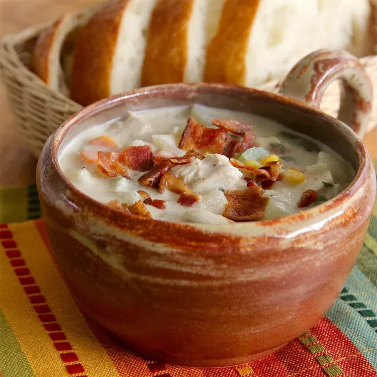

Turkey-Potato Chowder Recipe
Turkey-Potato Chowder Recipe

Description
Put your Thanksgiving leftovers to good use with this turkey potato soup.
Ingredients
- 2 cups peeled and diced potatoes
- 2 cups frozen mixed vegetables
- ¼ cup diced onion
- ¼ cup diced celery
- 2 (6.5 ounce) cans canned tomato sauce
- 1 teaspoon chopped fresh parsley
- 2 cups Swanson® Chicken Broth
- 1 ½ cups diced leftover cooked turkey
- ½ teaspoon poultry seasoning
- 1 ½ cups fat-free half-and-half
- ¼ cup all-purpose flour
- ½ teaspoon Sriracha sauce (Optional)
- salt and ground black pepper to taste
- 2 slices cooked bacon, crumbled
Steps
- Combine potatoes, mixed vegetables, onions, celery, parsley and chicken broth in a large saucepan over medium heat; bring to a boil. Reduce heat, cover, and simmer gently until vegetables are tender, about 10 minutes. Stir in turkey and poultry seasoning.
- Whisk half-and-half and flour together in a small bowl until smooth; stir mixture slowly into the hot soup. Continue to stir until soup thickens slightly and reaches a chowder-like consistency, about 5 minutes. Stir in Sriracha, salt, and pepper.
- Ladle into soup bowls and garnish with crumbled bacon.